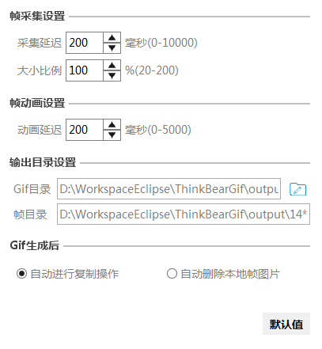
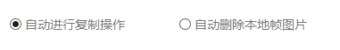
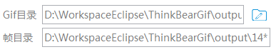
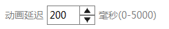
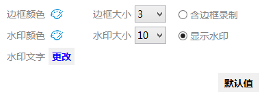

| 接口 | 说明 |
|---|---|
| ExamplePanel.OnCallback |
回调接口：示例面板需进行更新视图操作
|
| 类 | 说明 |
|---|---|
| BaseSetPanel |
基本设置
帧采集设置 IntTextFieldPanel帧动画设置 IntTextFieldPanel输出目录设置 GifSaveDirPanelGif生成后的操作 GifFinishRadioPanel |
| ExamplePanel | |
| GifFinishRadioPanel |
Gif生成后的操作
 |
| GifSaveDirPanel |
输出目录设置
 |
| IntTextFieldPanel |
整数输入框面板
 |
| SetDialog | |
| SetScreenShotPanel |
录制样式设置面板
 |
| SetTitleBarPanel |
标题栏样式设置面板
|
| UiSetPanel |